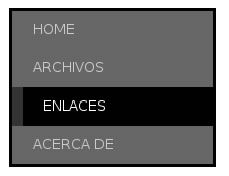

CSS
Menús verticales
¿Sabías que con listas se pueden hacer menús verticales chulos?
¿Que por qué listas? Porque un menú vertical es una serie de elementos relacionados, y lo más semántico que podemos hacer es meterlo en una lista.
El principal problema es que las listas son feas. En el capítulo anterior vimos cómo hacerlas más bonitas, pero quizás queramos algo un poco más diferente para nuestro menú. CSS nos da la solución, así que ya no tendrás excusa para hacer un menú en Flash.
En el menú que haremos ahora, hacemos apaños con los colores de fondo y los bordes para conseguir efectos cuando el ratón pase por encima. Puedes ver cómo quedaría en la figura 16.1. Como va con CSS, podríamos fácilmente incorporar imágenes, pero eso queda como ejercicio2.

Código XHTML
Al grano, necesitamos una lista tal que así:
<div id="menu">
<ul>
<li><a href ="..." title ="...">Home </a></li>
<li><a href ="..." title ="...">Archivos </a></li>
<li><a href ="..." title ="...">Enlaces </a></li>
<li><a href ="..." title ="...">Acerca de </a></li>
</ul>
</div>La lista
¡A meterle mano al CSS! Empezaremos primero con darle la anchura que queramos a la lista (que será la anchura del menú), poner una fuente maja y quitar las viñetas y márgenes de la lista.
#menu ul {
list-style-type: none;
margin: 0px;
padding: 0px;
width: 200px;
font-family: Arial, sans-serif;
font-size: 11pt;
}Ponemos a continuación un color de fondo para los ítems de la lista (<li>). Lo normal sería poner aquí los efectos de hover, para que se activen cuando el ratón pase por encima de todo el bloque, no sólo del texto del enlace; pero Quien-Tú-Sabes en sus versiones 6 e inferiores no soporta hovers en cosas que no sean un enlace, así que vamos a tener que emplear una artimaña más adelante. Por ahora, el CSS para el elemento li sería así de sencillo:
#menu ul li {
background-color: #666;
}Enlaces
Y aquí viene el chanchullo del que os hablaba antes para hacer el hover3: poner el enlace como si fuera un bloque, y así ocupará todo el li y podremos manipular sus dimensiones.
#menu ul li a {
color: #ccc;
text-decoration: none;
text-transform: uppercase;
display: block;
padding: 10px 10px 10px 20px;
}Sólo nos queda hacer los cambios para el hover:
#menu ul li a: hover {
background: #000;
border-left: 10px solid #333;
color: #fff;
}Si lo pruebas, verás que las letras se desplazan al hacer el hover, debido a que aparece el borde izquierdo. Si no os gusta este efecto, podéis añadir la línea siguiente al link cuando está normal. Lo que hace es poner un borde del mismo color que el fondo de los li, y así parece que no existe:
border-left: 10px solid #666;Merece la pena trastear con esta técnica, puede dar lugar a menús muy logrados.